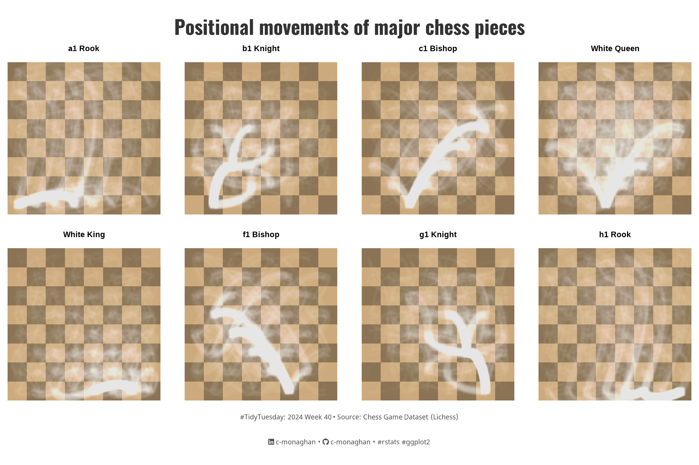
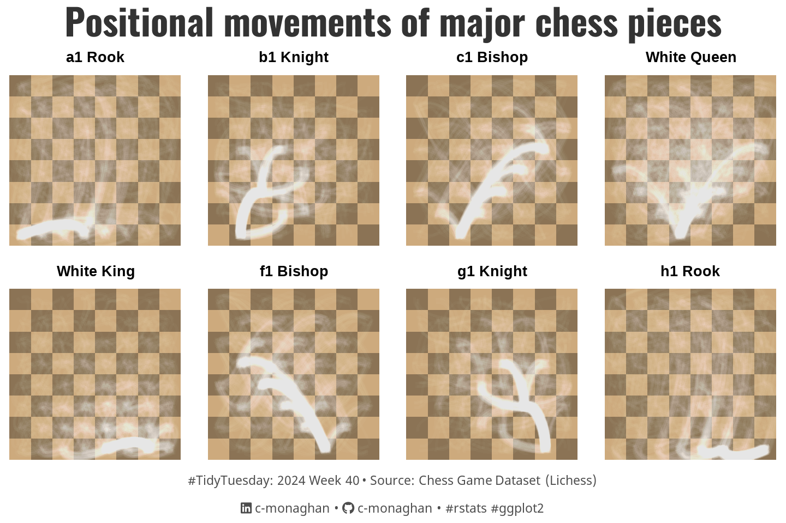

![]()
{kind=link}
set.seed(321) # For reproducibility
# Loading packages -------------------------------------------------------------
pacman::p_load(
tidyverse, # Easily Install and Load the 'Tidyverse'
rchess, # Working with chess PGN notation
ggtext, # Improved Text Rendering Support for 'ggplot2'
showtext, # Using Fonts More Easily in R Graphs
ggeasy, # Makes theming plots easier
furrr, # Parallel processing
glue, # Interpreted String Literals
ggfx # Pixel Filters for "ggplot2" and "grid"
)
# Visualization Parameters -----------------------------------------------------
# Plot aesthetics
title_col <- "gray20"
subtitle_col <- "gray20"
caption_col <- "gray30"
text_col <- "gray20"
col_palette <- paletteer::paletteer_d("peRReo::don")[c(5,9)]
chess_tiles <- c("burlywood3", "burlywood4") # Traditional board colours
# Icons
tt <- str_glue("#TidyTuesday: { 2024 } Week { 40 } • Source: Chess Game Dataset (Lichess)<br>")
li <- str_glue("<span style='font-family:fa6-brands'></span>")
gh <- str_glue("<span style='font-family:fa6-brands'></span>")
# Text
title_text <- str_glue("Positional movements of major chess pieces")
caption_text <- str_glue("{tt} {li} c-monaghan • {gh} c-monaghan • #rstats #ggplot2")
# Fonts
font_add("fa6-brands", here::here("fonts/6.4.2/Font Awesome 6 Brands-Regular-400.otf"))
font_add_google("Oswald", regular.wt = 400, family = "title")
font_add_google("Noto Sans", regular.wt = 400, family = "caption")
showtext_auto(enable = TRUE)
# Plot theme
theme_set(theme_void(base_size = 14, base_family = "text"))
theme_update(
plot.title.position = "plot",
plot.caption.position = "plot",
legend.position = 'plot',
panel.grid = element_blank(),
strip.text = element_text(size = 20, face = "bold",
margin = margin(0, 0, 2, 0)),
axis.text = element_blank(),
axis.ticks = element_blank()
)
# Variables --------------------------------------------------------------------
# Paths
path <- "posts/2024/09/28/"
folder <- "TT-W40/"
# White Pieces
white_pieces <- c("a1 Rook", "b1 Knight", "c1 Bishop", "White Queen",
"White King", "f1 Bishop", "g1 Knight", "h1 Rook")
# Reading in data --------------------------------------------------------------
data <- tidytuesdayR::tt_load(2024, week = 40)
data <- data$chess This document analyzes a dataset of chess games from Lichess provided by #TidyTuesday. It contains over 20,000 games, including information such as player ratings, move sequences, and other metrics. The main focus of this analysis will be on the specific moves played during each game.
Setting up
Chess Data
The dataset includes the move sequences made by each player, represented as a string of moves. Below is a preview of the first two rows of the dataset.
#|
data %>%
select(game_id, moves) %>%
mutate(game_id = seq(1:nrow(data))) %>%
rename(ID = game_id, Moves = moves) %>%
head(n = 2)
## # A tibble: 2 × 2
## ID Moves
## <int> <chr>
## 1 1 d4 d5 c4 c6 cxd5 e6 dxe6 fxe6 Nf3 Bb4+ Nc3 Ba5 Bf4
## 2 2 d4 Nc6 e4 e5 f4 f6 dxe5 fxe5 fxe5 Nxe5 Qd4 Nc6 Qe5+ Nxe5 c4 Bb4+Each row displays the move sequence for a game, starting with White’s move. For example, the Slav Defense (1. d4 d5 2. c4 c6) or the Nimzowitsch Defense (1. d4 Nc6 2. e4 e5). Chess moves are typically recorded using Portable Game Notation (PGN), which makes it easy to replicate games.
PGN Conversion
To facilitate further analysis, we will convert the raw move strings into the PGN format, using a custom convert_to_pgn() function that I wrote.
#|
# Convert moves into PGN format ------------------------------------------------
convert_to_pgn <- function(moves, game_id) {
# Split the moves string into a list of individual moves
move_list <- strsplit(moves, " ")[[1]]
# Initialize an empty string for the PGN format
pgn <- ""
# Loop through the moves two at a time (each move is a pair: white and black)
for (i in seq(1, length(move_list), by = 2)) {
move_number <- (i + 1) / 2 # Move number calculation
# Add both white's and black's moves, if available
if (i < length(move_list)) {
pgn <- paste0(pgn, move_number, ". ", move_list[i], " ", move_list[i+1], " ")
} else { # In case the game ends on white's move (no black move)
pgn <- paste0(pgn, move_number, ". ", move_list[i])
}
}
# Returning pgn string
return(pgn)
}
# Converting moves into pgn format
chess_games <- data %>%
select(game_id, moves) %>%
mutate(
game_id = seq(1:nrow(data)),
moves = mapply(convert_to_pgn, moves, game_id))
# Displaying converted dataset
chess_games %>%
rename(ID = game_id, Moves = moves) %>%
head(n = 2)
## # A tibble: 2 × 2
## ID Moves
## <int> <chr>
## 1 1 "1. d4 d5 2. c4 c6 3. cxd5 e6 4. dxe6 fxe6 5. Nf3 Bb4+ 6. Nc3 Ba5 7. Bf…
## 2 2 "1. d4 Nc6 2. e4 e5 3. f4 f6 4. dxe5 fxe5 5. fxe5 Nxe5 6. Qd4 Nc6 7. Qe…Extracting game history
Even with parallel processing the below code takes extremely long to run when rendering in quarto (4+ hrs). In a normal R session it takes about 20 minutes. I am not quite sure as to why the time difference is so extreme. However, to make my life a little easier and so I’m not waiting for hours when I need to re-render this document I will be reading in the data that this code outputs from an excel file.
However, for those interested I have left the parallel processing code below
NoteGame history code
Now that the data is in PGN format, we can use the history_detail() function from the rhcess package to extract the game history. However, because the dataset contains over 20,000 rows, processing every game sequentially would be time-consuming. To speed up this process, we will implement parallel processing using the furrr package.
#|
# Function to extract game history
process_moves <- function(p) {
chss <- Chess$new() # Initialize a new chess object
chss$load_pgn(p) # Load the PGN notation into the chess object
chss$history_detail() # Extract detailed history of the game
}
plan(multisession, workers = parallel::detectCores() - 1)
# Parallel processing: Convert PGN format to game history
chess_games <- chess_games %>%
mutate(data = future_map(moves, process_moves)) %>%
select(-moves) %>%
unnest(cols = c(data))The game history data contains 1,393,586 observations on both white and black’s moves. For the purpose of analysis we are only interested in plotting white’s moves. Additionally, we will sample 25,000 moves from white so as not to create an over-populated graph.
#|
chess_games <- readxl::read_xlsx(path = here::here("data/chess_history.xlsx"))
chess_games %>%
select(game_id, piece, from, to) %>%
head(n = 4)
## # A tibble: 4 × 4
## game_id piece from to
## <dbl> <chr> <chr> <chr>
## 1 7298 b1 Knight b1 d2
## 2 16254 g1 Knight e5 c4
## 3 19492 h1 Rook h1 e1
## 4 10827 White Queen b6 e3Positional Movements
Creating a chess board
First, we will create a chessboard using ggplot. We can do this using the .chessboard() function, again from the rchess package. This function generates the grid and coordinates for each square which can piped into ggplot.
#|
# Creating a chess board -------------------------------------------------------
board <- rchess:::.chessboarddata() %>%
tibble() %>%
select(cell, col, row, x, y, cc)
board %>%
head(n = 4)# A tibble: 4 × 6
cell col row x y cc
<chr> <chr> <int> <int> <int> <chr>
1 a1 a 1 1 1 b
2 b1 b 1 2 1 w
3 c1 c 1 3 1 b
4 d1 d 1 4 1 w Adding board movements
Next, we will join the chessboard data with the game data to calculate the origin and destination of each piece movement. This allows us to visualize the trajectories of pieces as they move across the board.
# Join board data with game data to get move origin and destination
chess_games <- chess_games %>%
left_join(board %>% rename(from = cell, x.from = x, y.from = y), by = "from") %>%
left_join(board %>%
rename(to = cell, x.to = x, y.to = y) %>%
select(-cc, -col, -row), # Exclude unnecessary columns
by = "to") %>%
mutate(x_gt_y = abs(x.to - x.from) > abs(y.to - y.from), # Check if x movement is greater than y
xy_sign = sign((x.to - x.from)*(y.to - y.from)) == 1, # Check if X and Y move in the same direction
x_gt_y_equal_xy_sign = x_gt_y == xy_sign) # Check if both conditions hold
# Previewing
chess_games %>%
select(piece, from, to, x.from, y.from, x.to, y.to) %>%
head(n = 4)# A tibble: 4 × 7
piece from to x.from y.from x.to y.to
<chr> <chr> <chr> <int> <int> <int> <int>
1 b1 Knight b1 d2 2 1 4 2
2 g1 Knight e5 c4 5 5 3 4
3 h1 Rook h1 e1 8 1 5 1
4 White Queen b6 e3 2 6 5 3Plotting piece movements
Now we can visualize their paths on a chessboard.
p <- chess_games %>%
ggplot() +
# Adding board data
geom_tile(data = board, aes(x, y, fill = cc)) +
# Adding piece movement
geom_curve(
data = chess_games %>% filter(x_gt_y_equal_xy_sign),
aes(x = x.from, y = y.from, xend = x.to, yend = y.to),
position = position_jitter(width = 0.2, height = 0.2),
curvature = 0.50, angle = -45, alpha = 0.02, color = "white",
linewidth = 1.02) +
geom_curve(
data = chess_games %>% filter(!x_gt_y_equal_xy_sign),
aes(x = x.from, y = y.from, xend = x.to, yend = y.to),
position = position_jitter(width = 0.2, height = 0.2),
curvature = -0.50, angle = 45, alpha = 0.02, color = "white",
linewidth = 1.02) +
# Labs
labs(
title = title_text,
caption = caption_text,
x = NULL,
y = NULL) +
# Scales
scale_fill_manual(values = chess_tiles) +
coord_equal() +
# Facet
facet_wrap(~ factor(piece, levels = white_pieces), ncol = 4) +
# Theme
theme(
plot.title = element_text(
size = 50,
family = "title",
face = "bold",
colour = title_col,
lineheight = 1.1,
hjust = 0.5,
margin = margin(t = 5, b = 5)),
plot.caption = element_markdown(
size = rel(1.25),
family = "caption",
colour = caption_col,
lineheight = 1.1,
hjust = 0.5,
margin = margin(t = 5, b = 5))
)
p
Saving
# Saving plot
ggsave(
filename = here::here(path, folder, "tt_2024_w40.png"),
plot = p,
width = 7.5,
height = 5,
units = "in",
dpi = 320
)
# Thumbnail
magick::image_read(here::here(path, folder, "tt_2024_w40.png")) |>
magick::image_resize(geometry = "800") |>
magick::image_write(here::here("posts/2024/thumbnails/tt_2024_w40_thumb.png"))Citation
BibTeX citation:
@online{monaghan2024,
author = {Monaghan, Cormac},
title = {Visualising Positional Moves in Chess},
date = {2024-09-28},
url = {https://c-monaghan.github.io/posts/2024/09/28/TT-W40/},
doi = {10.59350/0qppj-j7r10},
langid = {en}
}
For attribution, please cite this work as:
Monaghan, Cormac. 2024. “Visualising Positional Moves in
Chess.” September 28, 2024. https://doi.org/10.59350/0qppj-j7r10.